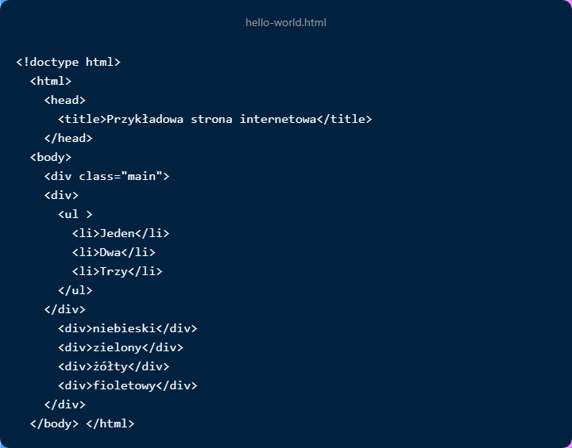

Ćwiczenie praktyczne 10.1
W tym ćwiczeniu będziemy eksperymentować w poruszaniu się po hierarchii
modelu DOM. Wykorzystamy przy tym prostą stronę internetową:

Wykonaj wymienione tutaj kroki:
-
Utwórz stronę internetową zawierającą przedstawiony tutaj kod i otwórz
ją w przeglądarce WWW bądź też odwiedź ulubioną witrynę internetową.
Następnie przejdź do konsoli i wyświetl w niej zawartość dokumentu za
pomocą polecenia console.dir(document).
-
We właściwości body.children pobierz pewne elementy potomne. Sprawdź,
jak dopasowują się do treści strony.
-
W konsoli przejdź do następnych elementów lub węzłów i wyświetl je.